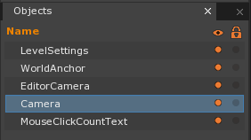
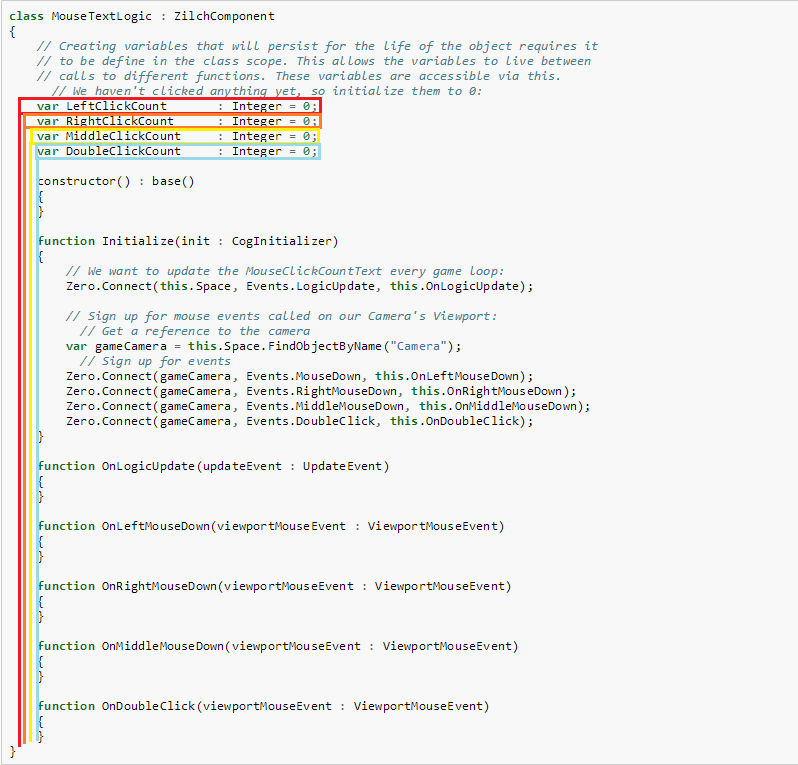
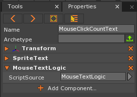
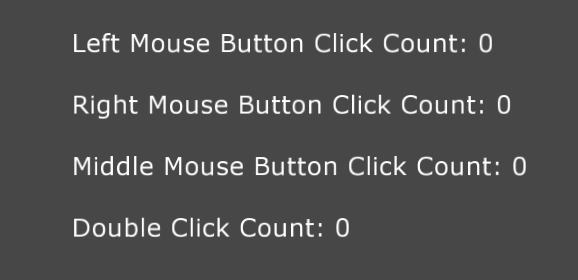
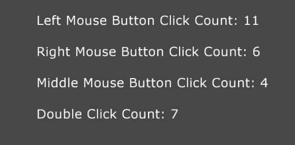
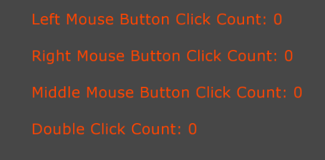
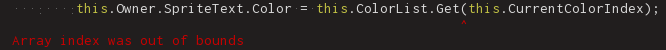

Mouse Input
This lesson covers Mouse Input, Mouse Events, arrays in Zilch, and Strings.
Create a New Project
- In the Level Window
- Press space
- In the Search Window
- Enter the command: NewProject
- Press Enter
- In the Projects Window
- Select Empty Project (2D)
- Give the project a name
- Press Enter
Level Setup
Create a Transform
Enter the command: CreateTransform
Select the Transform object we just created
In the Properties Window
Set Name to: MouseClickCountText
Add a SpriteText Component
Under SpriteText
- Set FontSize to: 50
- Set Position to: Centered
- Set Text to: MouseClickCountText
In the Objects Window
Select the Camera Object

In the Properties Window
- Add a CameraViewport component
- Under Transform
- Set Translation to: [0, 0, 40]
- Under CameraViewport
- Set Renderer to: LevelSettings
- Set Camera to: Camera
Save the project and run the game
Instead of printing to the Console Window as visual feedback for testing mouse input, we are going to use text from the SpriteText component instead.
Here is the game running:
{kind=link}
- Close the Game Window
Connecting to a Viewport’s Mouse Events
For testing mouse input, we will keep count of how many times we click the different mouse buttons, and then we will display those amounts as text.
- Add a ZilchScript named: MouseTextLogic
- Update the MouseTextLogic script with the following:
class MouseTextLogic : ZilchComponent
{
// Creating variables that will persist for the life of the object requires it
// to be define in the class scope. This allows the variables to live between
// calls to different functions. These variables are accessible via this.
// We haven't clicked anything yet, so initialize them to 0:
var LeftClickCount : Integer = 0;
var RightClickCount : Integer = 0;
var MiddleClickCount : Integer = 0;
var DoubleClickCount : Integer = 0;
function Initialize(init : CogInitializer)
{
// We want to update the MouseClickCountText every game loop:
Zero.Connect(this.Space, Events.LogicUpdate, this.OnLogicUpdate);
// Sign up for mouse events called on our Camera's Viewport:
// Get a reference to the camera
var gameCamera = this.Space.FindObjectByName("Camera");
// Sign up for events
Zero.Connect(gameCamera, Events.MouseDown, this.OnLeftMouseDown);
Zero.Connect(gameCamera, Events.RightMouseDown, this.OnRightMouseDown);
Zero.Connect(gameCamera, Events.MiddleMouseDown, this.OnMiddleMouseDown);
Zero.Connect(gameCamera, Events.DoubleClick, this.OnDoubleClick);
}
function OnLogicUpdate(event : UpdateEvent)
{
}
function OnLeftMouseDown(event : ViewportMouseEvent)
{
}
function OnRightMouseDown(event : ViewportMouseEvent)
{
}
function OnMiddleMouseDown(event : ViewportMouseEvent)
{
}
function OnDoubleClick(event : ViewportMouseEvent)
{
}
}
We declare and initialize our counter variables for the left, right, middle, and double mouse click. We get a reference to the camera which has a CameraViewport component. This allows us to connect to the camera object in order to receive viewport mouse events. The MouseDown, RightMouseDown, and MiddleMouseDown are a few of the MouseEvent types. They have specific properties pertaining to the mouse such as the position and movement of the mouse.
Reviewing Class Variables

Here you can see the variable’s longevity
Notice the use of the keyword this. Like how we use it to access our functions when connecting to events:
// Notice how we use "this" to
// gain access to our function:
Zero.Connect(this.Space, Events.LogicUpdate, this.OnLogicUpdate);
We do the same thing to access our variables:
class WithVariables
{
var MyVar: Integer = 0;
function PrintMyVar()
{
Console.Write("MyVar has a value of: ");
// Here we are using the "this" keyword to access MyVar:
Console.WriteLine(this.MyVar);
}
}
Converting Numerical Values To Strings
- Add the following function to the MouseTextLogic class:
function UpdateMouseClickCount()
{
// Update the text for the MouseClickCountText
var mouseClickCounts = new StringBuilder();
mouseClickCounts.WriteLine("Left Mouse Button Click Count: `this.LeftClickCount`");
mouseClickCounts.WriteLine();
mouseClickCounts.WriteLine("Right Mouse Button ClicK Count: `this.RightClickCount`");
mouseClickCounts.WriteLine();
mouseClickCounts.WriteLine("Middle Mouse Button Click Count: `this.MiddleClickCount`");
mouseClickCounts.WriteLine();
mouseClickCounts.WriteLine("Double Click Count: `this.DoubleClickCount`");
// Turn this stringbuilder into a string that our SpriteText can display:
this.Owner.SpriteText.Text = mouseClickCounts.ToString();
}
- In the UpdateMouseClickCountText function, we create the mouseClickCountText String and set it to be a String containing the leftClickCount value which has been converted from a numerical value to a String using Zilch’s built-in string interpolation using the `. The string interpolation operation works with any available variable giving it a printable String format.
We added a newline character by using a call to WriteLine, if we wanted text appended without a newline, we’d simply use the Write function. Finally, the character \n within a string still works as a valid way to indicate a newline. Notice how the StringBuilder works very similarly to the Console class we learned for printing to the console. Although related, the StringBuilder is not a String, so notice that we are calling the ToString function when setting the text on our SpriteText object.
- Update the following functions in the MouseTextLogic class:
function OnLogicUpdate(event : UpdateEvent)
{
this.UpdateMouseClickCount();
}
function OnLeftMouseDown(event : ViewportMouseEvent)
{
// Update the Click & Double Click counts
this.LeftClickCount += 1;
}
function OnRightMouseDown(event : ViewportMouseEvent)
{
// Update the Click & Double Click counts
this.RightClickCount += 1;
}
function OnMiddleMouseDown(event : ViewportMouseEvent)
{
this.MiddleClickCount += 1;
}
function OnDoubleClick(event : ViewportMouseEvent)
{
this.DoubleClickCount += 1;
}
- Select the MouseClickCountText object
- In the Properties Window
- Add the MouseTextLogic script component to the MouseClickCountText object

- Save the project and run the game
The MouseClickCountText should update its SpriteText component’s Text String every logic update to display the click counts:

After clicking and double-clicking the mouse buttons, the numbers should increase for each specific button:

This covers mouse button input. Now we will go over mouse scrolling.
Mouse Scrolling
The Scroll member variable of the MouseEvent is as 2D vector that represents the movement of the mouse scroll wheel. If the mouse has a ball, then it can scroll horizontally (the x value) in addition to the vertical scrolling (the y value).
- Close the Game Window and open the MouseTextLogic script
- Add the following code to the Initialize function:
Zero.Connect(gameCamera, Events.MouseScroll, this.OnMouseScroll);
- Add the OnMouseScroll function:
function OnMouseScroll(event : ViewportMouseEvent)
{
}
In order to visually show the mouse scroll wheel functionality, we will cycle through a list of colors that will be used as the color of the text. We will use the Zilch Array data structure.
Making a List of Colors
- Add the following variables to the MouseTextLogic class:
var MiddleClickCount : Integer = 0;
var DoubleClickCount : Integer = 0;
var ColorList : Array[Real4] = new Array[Real4]();
var CurrentColorIndex : Integer = 0;
- Add the following code to the Initialize function
// R G B A
var orangeRed = local Real4( 1.0, 0.27, 0.0, 1.0);
var yellow = local Real4( 1.0, 1.0, 0.0, 1.0);
var midnightBlue = local Real4( 0.1, 0.1, 0.44, 1.0);
var greenYellow = local Real4(0.68, 1.0, 0.18, 1.0);
var pink = local Real4(1.0, 0.75, 0.8, 1.0);
var purple = local Real4(0.5, 0.0, 0.5, 1.0);
this.ColorList.Push(orangeRed );
this.ColorList.Push(yellow );
this.ColorList.Push(midnightBlue);
this.ColorList.Push(greenYellow );
this.ColorList.Push(pink );
this.ColorList.Push(purple );
Arrays in Zilch are declared with type they contain the between square brackets. Each item in the list is separated by a comma. We have created the currentColorIndex variable which will represent the current color being used from the list, or array, of colors.
- Add the following code to the UpdateMouseClickCount function:
// Update the text color:
this.Owner.SpriteText.Color = this.ColorList.Get(this.CurrentColorIndex);
- Notice how we use the opening and closing square brackets with the currentColorIndex in order to get the color at that location in the list.
- Add the following code to the OnMouseScroll function of the MouseTextLogic class:
// If Scrolling up,
if (viewportMouseEvent.Scroll.Y > 0.0)
{
// Increment the index
this.CurrentColorIndex += 1;
}
// If Scrolling Down,
if (viewportMouseEvent.Scroll.Y < 0.0)
{
// Decrement the index
this.CurrentColorIndex -= 1;
}
- When we get the MouseScroll event, we will increment or decrement the currentColorIndex based on whether or not we are scrolling up or down vertically with the mouse scroll wheel.
- Save the project and run the game
The text color should be set to the first color in the color list:

Scrolling the mouse wheel up and down will change the color. We get an error if we go “out of bounds” with our currentColorIndex variable (in the script and the Console Window):
In the script:

In the Console Window:
{kind=link}
We can avoid this by not letting our currentColorIndex variable get out of range (less than 0 or greater than the index of the last item in the list). We will do this by wrapping back around to the opposite end when we go out of bounds.
- Close the Game Window and open the MouseTextLogic script
- Add the following code to the OnMouseScroll function:
this.CurrentColorIndex -= 1;
}
// Make sure the index is not out of bounds
this.WrapCurrentColorIndex();
- Add the following function to the MouseTextLogic class:
function WrapCurrentColorIndex()
{
// Get the last valid index in the color list:
var lastColorIndex = this.ColorList.LastIndex;
// If we are before the first index,
if (this.CurrentColorIndex < 0)
{
// wrap it to the end of the list.
this.CurrentColorIndex = lastColorIndex;
}
// If we are beyond the last index,
if (this.CurrentColorIndex > lastColorIndex)
{
// wrap it to the beginning of the list.
this.CurrentColorIndex = 0;
}
}
- Save the project and run the game
Clicking the mouse buttons and scrolling the mouse increases the click counts and changes the text color, respectively:
{kind=link}
{kind=link}
{kind=link}
Now we know how to detect mouse input, we know how to convert numerical values into Strings, and we know how to create and index an Array in Zilch.